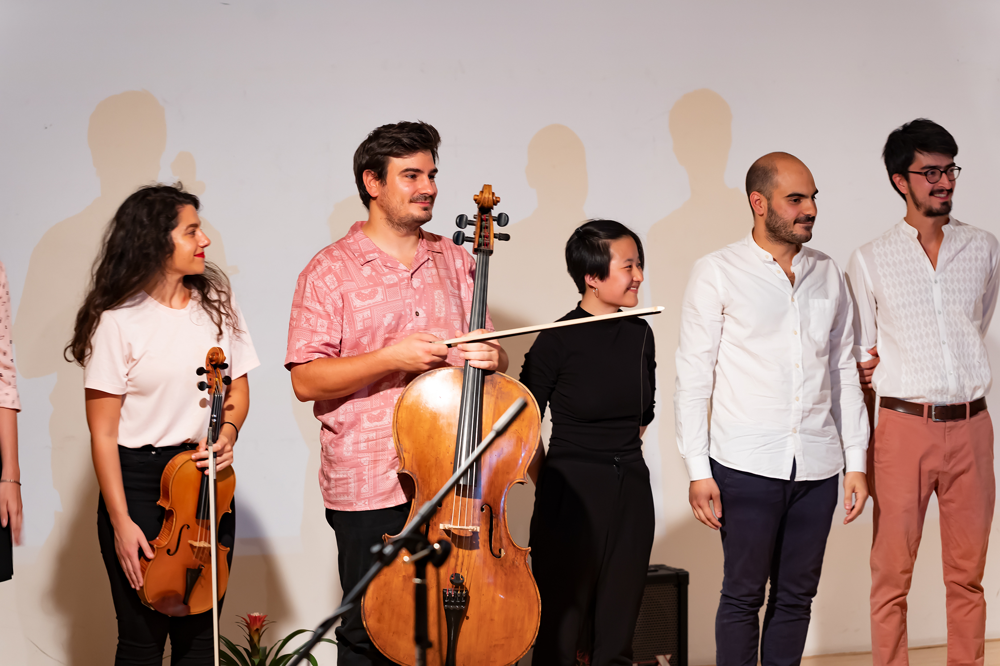
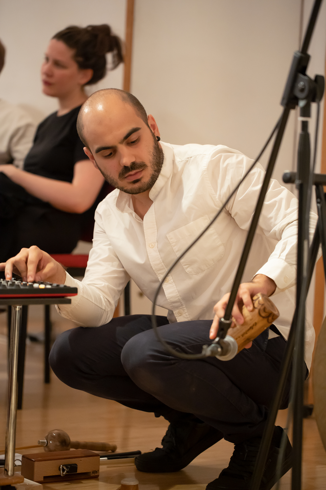
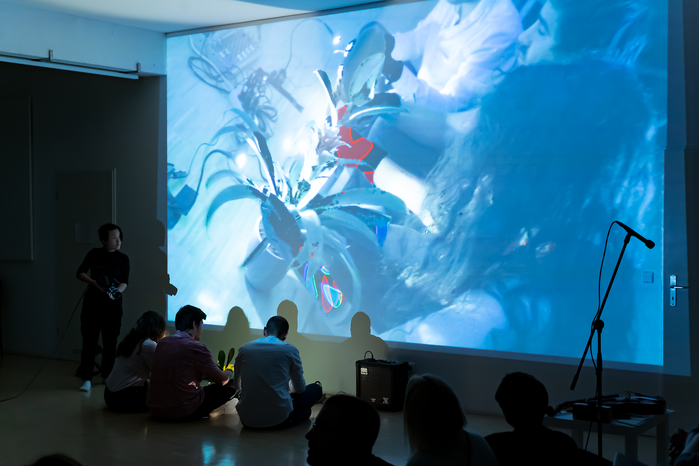
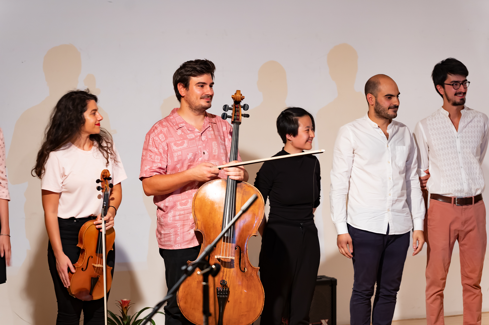
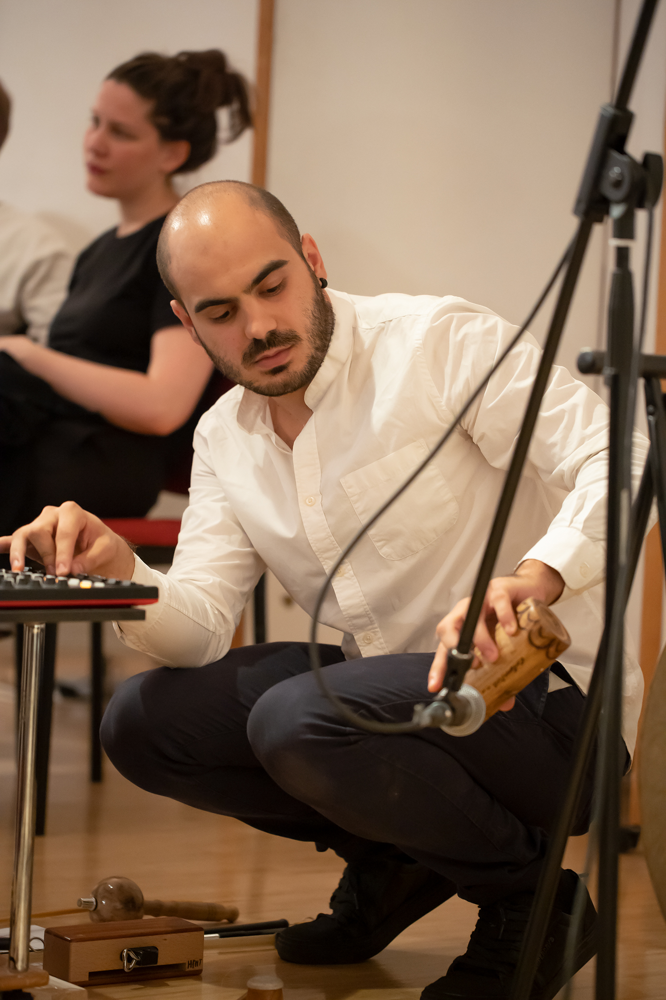
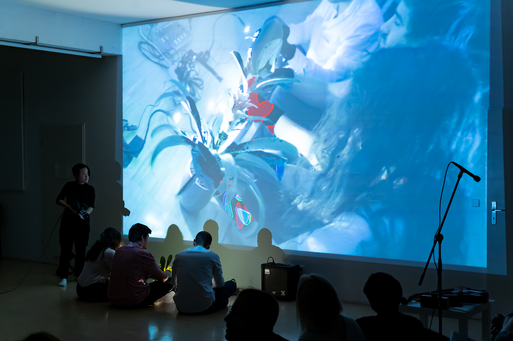
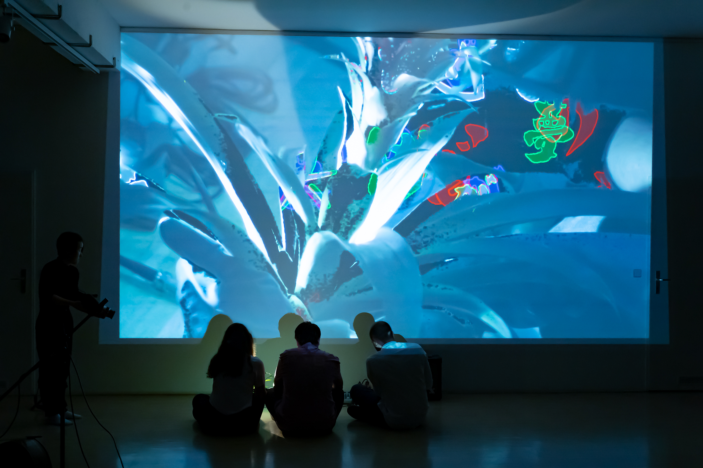
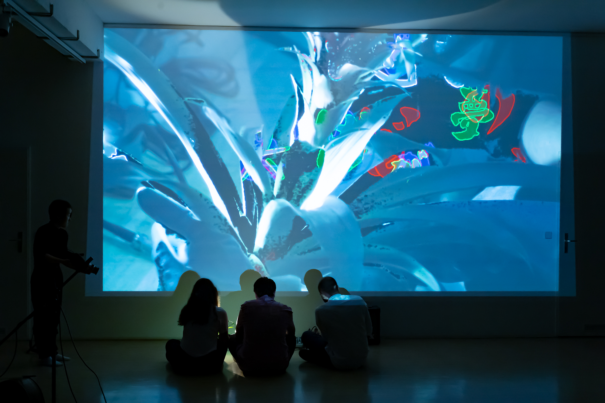

shunkan
Shunkan is the Japanese word for 'moment'. Music Enseble 'Volans' was invited by the festival 'Shapes of Haiku' to make a performance based in the famous Japanese Haiku poems.
Fanis Gioles (Concept, Composition, Performance), Michael Heupel (cello), Nefeli Galani (viola), Carlos Rico (electronics), Nana Xu (live visuals), Anna Syrianou (stage design)
 





 
